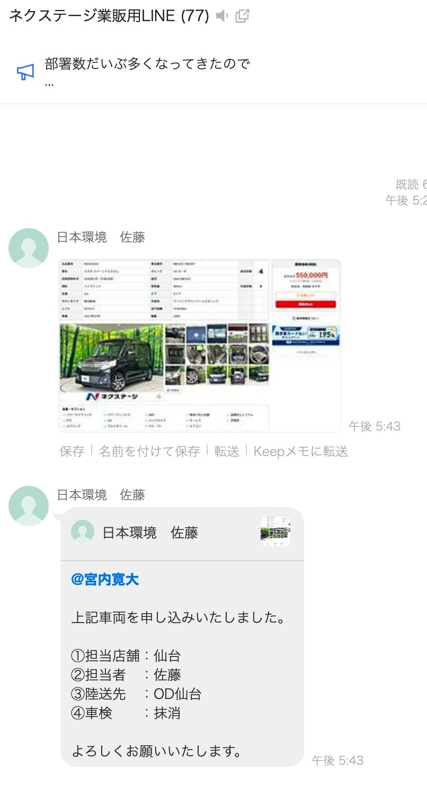
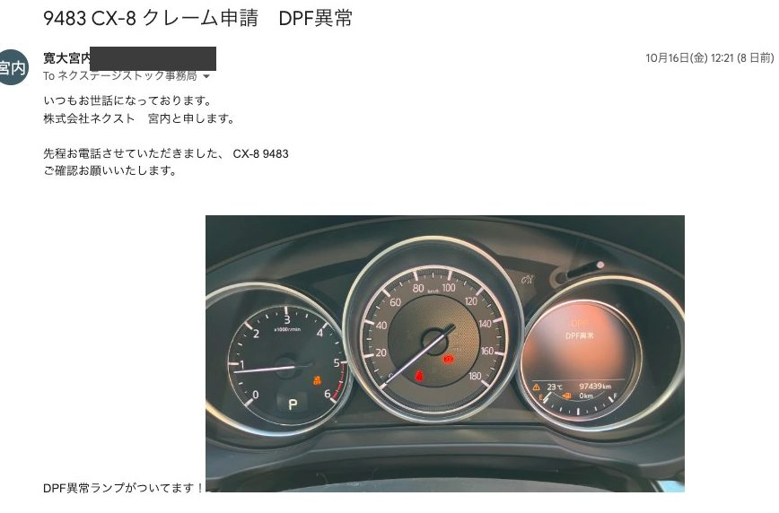

単元20
詳しいマニュアル
ネクステージ業販とオークション
お客様と決めた車を、ネクステージ業販かオークション（AA）で押さえる手順です。業販は宮内マネージャーに回して落札の可否を待ちます。
- 1車を見つけるネクステージストック・オークション
- 2評価を見比べるオークネットでも同じ車を確認
- 3商談申込み業販サイトで2回「商談申込み」
- 4LINEで共有宮内マネージャーをメンション
- 5回答を待つ落札の可否はLINEで返ってくる
申し込む前に評価を見比べる
なぜやるかネクステージストックとオークネットで、同じ車でも評価点やグレードが違うことがあります。確認しないと、お客様に伝えた内容と違う車が届きます。
オークネットで同じ車を探す
- 車台番号や出品情報で、同じ車両を見つける 案
写真を追加予定オークネットで同じ車両を探す検索画面評価点・グレード・装備を見比べる
- 違いがあれば、低い方の評価でお客様に説明する 案
- 迷ったら2人以上で判断する（単元19）

図5-D同じ車両のネクステージストック（左）とオークネット（右）。評価点・グレードの違いを見比べる
確認チェック
ネクステージ業販で商談申込みをする
なぜやるか業販の車は、申込みのあと宮内マネージャーが落札の可否を確認します。申込みとLINEの共有はセットです。
車両ページで「商談申込み」を押す
- 車両ページの右上にある

図5-Aネクステージ業販の車両ページ。右上の「商談申込み」を押す 確認画面でもう一度「商談申込み」を押す
- 車について確認したいことがあればコメント欄に書く

図5-B商談申込みの確認画面。確認したいことはコメントに書き、「商談申込み」を押す グループLINEで宮内マネージャーに共有する
- ネクステージ業販用のグループLINEで、宮内マネージャーをメンションする
- 車両ページのスクショと、下の4項目を送る

図5-Cネクステージ業販用LINEでの共有の例（①担当店舗 ②担当者 ③陸送先 ④車検） 落札の可否の回答を待つ
- 回答はグループLINEに来る。回答が出るまで、お客様には確定と言わない 案
LINEグループLINEへの共有の形
@宮内マネージャー
上記車両を商談申込みいたしました。
①担当店舗：〇〇
②担当者：〇〇
③陸送先：〇〇
④車検：抹消／継続
よろしくお願いいたします。
注意・よくある間違い
- 陸送先と車検（抹消か継続か）は、6-1章の陸送・登録の段取りに使う。空欄で送らない
オークション（AA）で落札する
なぜやるかネクステージにない車はオークションで探します。手順は宮内マネージャーの原稿待ちです。
ワンプライスかセリかを決める
- ワンプライス（即決価格）は他社に先に買われることがある
- ICTの車は評価点3.5以上、セリでもよい。ICTの許可が出てから落札する
落札の手順
- 確認中：未提出ワンプライス・セリそれぞれの手順、落札場所（会場）と陸送先の決め方
写真を追加予定USS・オークネット・アイオークの落札画面落札料・陸送費を原価に入れる
- 粗利の計算に入れる（単元15）
担当者にお願いしたいこと
このページを完成させるために、次の写真・情報が必要です。
- AAでの落札の手順と画面の写真（宮内マネージャー）
- 車を押さえる（申込み・落札する）のは営業本人か部署の担当者か
- オークネットで同じ車両を探す方法
元にした資料：宮内マネージャーの原稿（ネクステージ業販の使い方）、11/3会議。案は叩き台として追加した内容、確認中は担当者の確認待ちです。お客様の情報が写った画面は黒塗りしています。